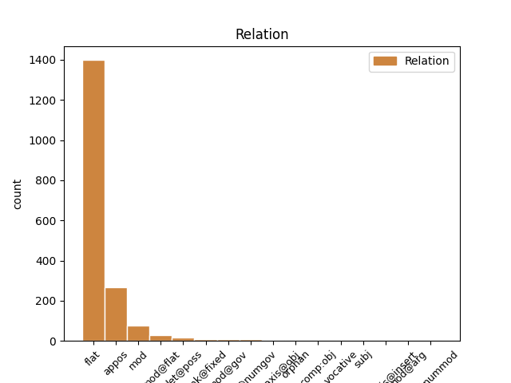
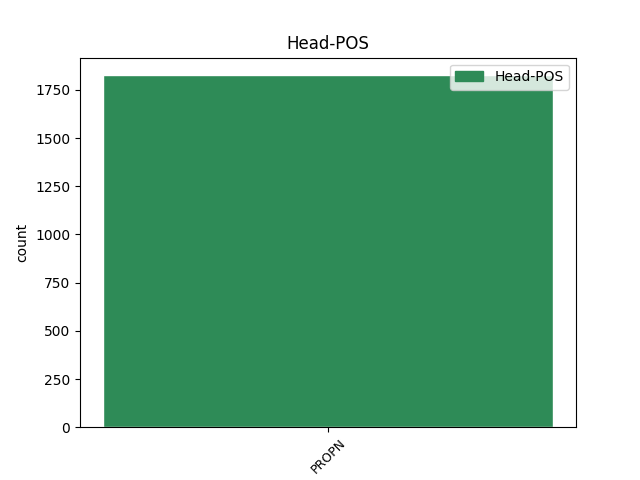
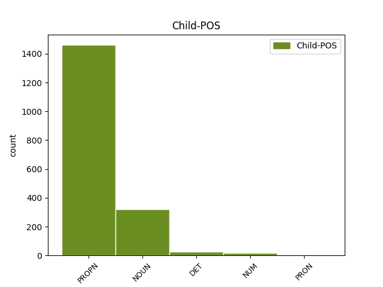

Distribution of features within this leaf



Agreement Rules sorted by frequency.
- When the dependent token is the flat multiword expression(flat) of the head token, and the head token is PROPN and the dependent token is PROPN.
1 Wyniki _ _ _ _ 0 _ _ _
2 pierwszego _ _ _ _ 0 _ _ _
3 zaproszenia _ _ _ _ 0 _ _ _
4 do _ _ _ _ 0 _ _ _
5 składania _ _ _ _ 0 _ _ _
6 wniosków _ _ _ _ 0 _ _ _
7 w _ _ _ _ 0 _ _ _
8 ramach _ _ _ _ 0 _ _ _
9 sieci _ _ _ _ 0 _ _ _
10 Marie Marie PROPN subst:sg:gen:f Case=Gen|Gender=Fem|Number=Sing 0 _ _ _
11 Curie Curie PROPN subst:sg:gen:f Case=Gen|Gender=Fem|Number=Sing 10 flat _ _
12 kształcenia _ _ _ _ 0 _ _ _
13 początkowego _ _ _ _ 0 _ _ _
1 Jak _ _ _ _ 0 _ _ _
2 już _ _ _ _ 0 _ _ _
3 wszyscy _ _ _ _ 0 _ _ _
4 chyba _ _ _ _ 0 _ _ _
5 wiecie _ _ _ _ 0 _ _ _
6 , _ _ _ _ 0 _ _ _
7 jestem _ _ _ _ 0 _ _ _
8 Shane Shane PROPN subst:sg:nom:m1 Animacy=Hum|Case=Nom|Gender=Masc|Number=Sing 0 _ _ _
9 , _ _ _ _ 0 _ _ _
10 bratanek bratanek NOUN subst:sg:nom:m1 Animacy=Hum|Case=Nom|Gender=Masc|Number=Sing 8 appos _ _
11 Nate'a _ _ _ _ 0 _ _ _
12 . _ _ _ _ 0 _ _ _
1 Nazwa _ _ _ _ 0 _ _ _
2 środka _ _ _ _ 0 _ _ _
3 pomocy _ _ _ _ 0 _ _ _
4 Razvojne _ _ _ _ 0 _ _ _
5 podpore _ _ _ _ 0 _ _ _
6 Pomurski Pomurski PROPN subst:sg:nom:n:ncol Case=Nom|Gender=Neut|Number=Sing 0 _ _ _
7 regiji regiji NOUN subst:sg:nom:n:ncol Case=Nom|Gender=Neut|Number=Sing 6 mod@flat _ _
8 – _ _ _ _ 0 _ _ _
9 regionalni _ _ _ _ 0 _ _ _
10 cilji _ _ _ _ 0 _ _ _
1 Chcę _ _ _ _ 0 _ _ _
2 Europy Europa PROPN subst:sg:gen:f Case=Gen|Gender=Fem|Number=Sing 0 _ _ _
3 , _ _ _ _ 0 _ _ _
4 UE UE PROPN subst:sg:gen:f Case=Gen|Gender=Fem|Number=Sing 2 appos _ SpaceAfter=No
5 , _ _ _ _ 0 _ _ _
6 która _ _ _ _ 0 _ _ _
7 bierze _ _ _ _ 0 _ _ _
8 odpowiedzialność _ _ _ _ 0 _ _ _
9 za _ _ _ _ 0 _ _ _
10 prawa _ _ _ _ 0 _ _ _
11 człowieka _ _ _ _ 0 _ _ _
12 . _ _ _ _ 0 _ _ _
1 Bayer Bayer PROPN subst:sg:nom:m3 Animacy=Inan|Case=Nom|Gender=Masc|Number=Sing 0 _ _ _
2 AG _ _ _ _ 0 _ _ _
3 , _ _ _ _ 0 _ _ _
4 Cologne Cologne PROPN subst:sg:nom:n:ncol Case=Nom|Gender=Neut|Number=Sing 1 mod _ _
5 ( _ _ _ _ 0 _ _ _
6 Niemcy _ _ _ _ 0 _ _ _
7 ) _ _ _ _ 0 _ _ _
8 , _ _ _ _ 0 _ _ _
1 Bayer _ _ _ _ 0 _ _ _
2 AG _ _ _ _ 0 _ _ _
3 , _ _ _ _ 0 _ _ _
4 Cologne Cologne PROPN subst:sg:nom:n:ncol Case=Nom|Gender=Neut|Number=Sing 0 _ _ _
5 ( _ _ _ _ 0 _ _ _
6 Niemcy niemiec NOUN subst:pl:nom:m1 Animacy=Hum|Case=Nom|Gender=Masc|Number=Plur 4 mod _ SpaceAfter=No
7 ) _ _ _ _ 0 _ _ _
8 , _ _ _ _ 0 _ _ _
1 Pożyczył _ _ _ _ 0 _ _ _
2 by _ _ _ _ 0 _ _ _
3 m _ _ _ _ 0 _ _ _
4 ci _ _ _ _ 0 _ _ _
5 swojego swój DET adj:sg:acc:m3:pos Animacy=Inan|Case=Acc|Gender=Masc|Number=Sing|Poss=Yes|PronType=Prs|Reflex=Yes 6 det@poss _ _
6 Caddy'ego Caddy PROPN subst:sg:acc:m3 Animacy=Inan|Case=Acc|Gender=Masc|Number=Sing 0 _ _ _
7 , _ _ _ _ 0 _ _ _
8 ale _ _ _ _ 0 _ _ _
9 wiewiórki _ _ _ _ 0 _ _ _
10 przegryzły _ _ _ _ 0 _ _ _
11 linki _ _ _ _ 0 _ _ _
12 hamulcowe _ _ _ _ 0 _ _ _
13 . _ _ _ _ 0 _ _ _
1 W _ _ _ _ 0 _ _ _
2 górnej _ _ _ _ 0 _ _ _
3 prawej _ _ _ _ 0 _ _ _
4 części _ _ _ _ 0 _ _ _
5 okna _ _ _ _ 0 _ _ _
6 głównego _ _ _ _ 0 _ _ _
7 można _ _ _ _ 0 _ _ _
8 znaleźć _ _ _ _ 0 _ _ _
9 dwie _ _ _ _ 0 _ _ _
10 przydatne _ _ _ _ 0 _ _ _
11 podczas _ _ _ _ 0 _ _ _
12 testów _ _ _ _ 0 _ _ _
13 funkcje _ _ _ _ 0 _ _ _
14 : _ _ _ _ 0 _ _ _
15 Anti _ _ _ _ 0 _ _ _
16 flood _ _ _ _ 0 _ _ _
17 i _ _ _ _ 0 _ _ _
18 Ping Ping PROPN subst:sg:acc:m3 Animacy=Inan|Case=Acc|Gender=Masc|Number=Sing 0 _ _ _
19 Check Check PROPN subst:sg:acc:m3 Animacy=Inan|Case=Acc|Gender=Masc|Number=Sing 18 unk@fixed _ SpaceAfter=No
20 . _ _ _ _ 0 _ _ _
1 Zdegradowanie _ _ _ _ 0 _ _ _
2 wewnętrznej _ _ _ _ 0 _ _ _
3 efektywności _ _ _ _ 0 _ _ _
4 przez _ _ _ _ 0 _ _ _
5 brak _ _ _ _ 0 _ _ _
6 dostosowania _ _ _ _ 0 _ _ _
7 pomiędzy _ _ _ _ 0 _ _ _
8 strategią _ _ _ _ 0 _ _ _
9 i _ _ _ _ 0 _ _ _
10 strukturą _ _ _ _ 0 _ _ _
11 może _ _ _ _ 0 _ _ _
12 zniekształcić _ _ _ _ 0 _ _ _
13 " _ _ _ _ 0 _ _ _
14 . _ _ _ _ 0 _ _ _
15 . _ _ _ _ 0 _ _ _
16 . _ _ _ _ 0 _ _ _
17 procesu _ _ _ _ 0 _ _ _
18 podejmowania _ _ _ _ 0 _ _ _
19 decyzji _ _ _ _ 0 _ _ _
20 , _ _ _ _ 0 _ _ _
21 w _ _ _ _ 0 _ _ _
22 którym _ _ _ _ 0 _ _ _
23 preferuje _ _ _ _ 0 _ _ _
24 się _ _ _ _ 0 _ _ _
25 inne _ _ _ _ 0 _ _ _
26 cele _ _ _ _ 0 _ _ _
27 , _ _ _ _ 0 _ _ _
28 niż _ _ _ _ 0 _ _ _
29 cele _ _ _ _ 0 _ _ _
30 skierowane _ _ _ _ 0 _ _ _
31 na _ _ _ _ 0 _ _ _
32 zysk _ _ _ _ 0 _ _ _
33 " _ _ _ _ 0 _ _ _
34 ( _ _ _ _ 0 _ _ _
35 Williamson Williamson PROPN subst:sg:nom:m1 Animacy=Hum|Case=Nom|Gender=Masc|Number=Sing 0 _ _ _
36 1975 1975 NUM num:pl:nom:m3:rec Animacy=Inan|Case=Nom|Gender=Masc|Number=Plur|NumForm=Digit|NumType=Card 35 mod _ SpaceAfter=No
37 : _ _ _ _ 0 _ _ _
38 133 _ _ _ _ 0 _ _ _
39 ) _ _ _ _ 0 _ _ _
40 . _ _ _ _ 0 _ _ _
1 KAROLINA Karolina PROPN subst:sg:nom:f Case=Nom|Gender=Fem|Number=Sing 0 _ _ _
2 : _ _ _ _ 0 _ _ _
3 ( _ _ _ _ 0 _ _ _
4 żartem _ _ _ _ 0 _ _ _
5 ) _ _ _ _ 0 _ _ _
6 Bogu _ _ _ _ 0 _ _ _
7 dzięki dzięki NOUN subst:pl:nom:n:pt Case=Nom|Gender=Neut|Number=Ptan 1 parataxis@obj _ SpaceAfter=No
8 , _ _ _ _ 0 _ _ _
9 że _ _ _ _ 0 _ _ _
10 trafił _ _ _ _ 0 _ _ _
11 się _ _ _ _ 0 _ _ _
12 ten _ _ _ _ 0 _ _ _
13 ślub _ _ _ _ 0 _ _ _
14 Kasi _ _ _ _ 0 _ _ _
15 i _ _ _ _ 0 _ _ _
16 Łukasza _ _ _ _ 0 _ _ _
17 . _ _ _ _ 0 _ _ _
1 Rzut _ _ _ _ 0 _ _ _
2 oka _ _ _ _ 0 _ _ _
3 na _ _ _ _ 0 _ _ _
4 " _ _ _ _ 0 _ _ _
5 Mawsu'at Mawsu'at PROPN subst:sg:acc:m3 Animacy=Inan|Case=Acc|Gender=Masc|Number=Sing 0 _ _ _
6 al-Jihad al-Jihad NOUN subst:sg:acc:m3 Animacy=Inan|Case=Acc|Gender=Masc|Number=Sing 5 unk@fixed _ _
7 al-Afghani _ _ _ _ 0 _ _ _
8 " _ _ _ _ 0 _ _ _
9 ( _ _ _ _ 0 _ _ _
10 oryginalny _ _ _ _ 0 _ _ _
11 arabski _ _ _ _ 0 _ _ _
12 tytuł _ _ _ _ 0 _ _ _
13 encyklopedii _ _ _ _ 0 _ _ _
14 ) _ _ _ _ 0 _ _ _
15 wystarczył _ _ _ _ 0 _ _ _
16 , _ _ _ _ 0 _ _ _
17 by _ _ _ _ 0 _ _ _
18 m _ _ _ _ 0 _ _ _
19 zrozumiał _ _ _ _ 0 _ _ _
20 , _ _ _ _ 0 _ _ _
21 że _ _ _ _ 0 _ _ _
22 być _ _ _ _ 0 _ _ _
23 może _ _ _ _ 0 _ _ _
24 mam _ _ _ _ 0 _ _ _
25 przed _ _ _ _ 0 _ _ _
26 sobą _ _ _ _ 0 _ _ _
27 klucz _ _ _ _ 0 _ _ _
28 do _ _ _ _ 0 _ _ _
29 poznania _ _ _ _ 0 _ _ _
30 sekretów _ _ _ _ 0 _ _ _
31 organizacji _ _ _ _ 0 _ _ _
32 Osama _ _ _ _ 0 _ _ _
33 bin _ _ _ _ 0 _ _ _
34 Ladena _ _ _ _ 0 _ _ _
35 , _ _ _ _ 0 _ _ _
36 najgroźniejszego _ _ _ _ 0 _ _ _
37 terrorysty _ _ _ _ 0 _ _ _
38 świata _ _ _ _ 0 _ _ _
39 , _ _ _ _ 0 _ _ _
40 odpowiedzialnego _ _ _ _ 0 _ _ _
41 m.in _ _ _ _ 0 _ _ _
42 . _ _ _ _ 0 _ _ _
43 za _ _ _ _ 0 _ _ _
44 wspieranie _ _ _ _ 0 _ _ _
45 mudżahedinów _ _ _ _ 0 _ _ _
46 i _ _ _ _ 0 _ _ _
47 zamachy _ _ _ _ 0 _ _ _
48 bombowe _ _ _ _ 0 _ _ _
49 na _ _ _ _ 0 _ _ _
50 ambasady _ _ _ _ 0 _ _ _
51 amerykańskie _ _ _ _ 0 _ _ _
52 w _ _ _ _ 0 _ _ _
53 Afryce _ _ _ _ 0 _ _ _
54 w _ _ _ _ 0 _ _ _
55 1998 _ _ _ _ 0 _ _ _
56 roku _ _ _ _ 0 _ _ _
57 . _ _ _ _ 0 _ _ _
1 Zebrani _ _ _ _ 0 _ _ _
2 wysłuchali _ _ _ _ 0 _ _ _
3 przemówień _ _ _ _ 0 _ _ _
4 kilku kilka DET num:pl:gen:m1:congr Animacy=Hum|Case=Gen|Gender=Masc|Number=Plur|NumType=Card|PronType=Ind 5 det@nummod _ _
5 Palestyńczyków Palestyńczyk PROPN subst:pl:gen:m1 Animacy=Hum|Case=Gen|Gender=Masc|Number=Plur 0 _ _ _
6 i _ _ _ _ 0 _ _ _
7 reprezentantów _ _ _ _ 0 _ _ _
8 innych _ _ _ _ 0 _ _ _
9 krajów _ _ _ _ 0 _ _ _
10 arabskich _ _ _ _ 0 _ _ _
11 - _ _ _ _ 0 _ _ _
12 mówili _ _ _ _ 0 _ _ _
13 oni _ _ _ _ 0 _ _ _
14 o _ _ _ _ 0 _ _ _
15 łamaniu _ _ _ _ 0 _ _ _
16 praw _ _ _ _ 0 _ _ _
17 człowieka _ _ _ _ 0 _ _ _
18 w _ _ _ _ 0 _ _ _
19 swoim _ _ _ _ 0 _ _ _
20 kraju _ _ _ _ 0 _ _ _
21 , _ _ _ _ 0 _ _ _
22 o _ _ _ _ 0 _ _ _
23 problemach _ _ _ _ 0 _ _ _
24 ze _ _ _ _ 0 _ _ _
25 skontaktowaniem _ _ _ _ 0 _ _ _
26 się _ _ _ _ 0 _ _ _
27 z _ _ _ _ 0 _ _ _
28 bliskimi _ _ _ _ 0 _ _ _
29 . _ _ _ _ 0 _ _ _
1 Natomiast _ _ _ _ 0 _ _ _
2 parodia _ _ _ _ 0 _ _ _
3 mickiewiczowskiego _ _ _ _ 0 _ _ _
4 wiersza _ _ _ _ 0 _ _ _
5 " _ _ _ _ 0 _ _ _
6 Do _ _ _ _ 0 _ _ _
7 B _ _ _ _ 0 _ _ _
8 . _ _ _ _ 0 _ _ _
9 Z _ _ _ _ 0 _ _ _
10 . _ _ _ _ 0 _ _ _
11 " _ _ _ _ 0 _ _ _
12 ( _ _ _ _ 0 _ _ _
13 Bohdana _ _ _ _ 0 _ _ _
14 Zaleskiego _ _ _ _ 0 _ _ _
15 ) _ _ _ _ 0 _ _ _
16 zaczynającego _ _ _ _ 0 _ _ _
17 się _ _ _ _ 0 _ _ _
18 od _ _ _ _ 0 _ _ _
19 słów _ _ _ _ 0 _ _ _
20 : _ _ _ _ 0 _ _ _
21 " _ _ _ _ 0 _ _ _
22 Słowiczku _ _ _ _ 0 _ _ _
23 mój _ _ _ _ 0 _ _ _
24 ! _ _ _ _ 0 _ _ _
25 a _ _ _ _ 0 _ _ _
26 leć _ _ _ _ 0 _ _ _
27 a _ _ _ _ 0 _ _ _
28 piej _ _ _ _ 0 _ _ _
29 ! _ _ _ _ 0 _ _ _
30 " _ _ _ _ 0 _ _ _
31 , _ _ _ _ 0 _ _ _
32 włożona _ _ _ _ 0 _ _ _
33 w _ _ _ _ 0 _ _ _
34 usta _ _ _ _ 0 _ _ _
35 wdowy _ _ _ _ 0 _ _ _
36 po _ _ _ _ 0 _ _ _
37 Jerzym _ _ _ _ 0 _ _ _
38 , _ _ _ _ 0 _ _ _
39 Kazimiery _ _ _ _ 0 _ _ _
40 Żuławskiej _ _ _ _ 0 _ _ _
41 , _ _ _ _ 0 _ _ _
42 wykpiwała _ _ _ _ 0 _ _ _
43 wymuszany _ _ _ _ 0 _ _ _
44 jakoby _ _ _ _ 0 _ _ _
45 przez _ _ _ _ 0 _ _ _
46 nią _ _ _ _ 0 _ _ _
47 na _ _ _ _ 0 _ _ _
48 synach _ _ _ _ 0 _ _ _
49 duchowy _ _ _ _ 0 _ _ _
50 obowiązek _ _ _ _ 0 _ _ _
51 " _ _ _ _ 0 _ _ _
52 bycia _ _ _ _ 0 _ _ _
53 artystą _ _ _ _ 0 _ _ _
54 " _ _ _ _ 0 _ _ _
55 , _ _ _ _ 0 _ _ _
56 a _ _ _ _ 0 _ _ _
57 wyrażający _ _ _ _ 0 _ _ _
58 się _ _ _ _ 0 _ _ _
59 wezwaniem _ _ _ _ 0 _ _ _
60 : _ _ _ _ 0 _ _ _
61 Mareczku _ _ _ _ 0 _ _ _
62 mój _ _ _ _ 0 _ _ _
63 ! _ _ _ _ 0 _ _ _
64 a _ _ _ _ 0 _ _ _
65 leć _ _ _ _ 0 _ _ _
66 , _ _ _ _ 0 _ _ _
67 a _ _ _ _ 0 _ _ _
68 piej _ _ _ _ 0 _ _ _
69 ! _ _ _ _ 0 _ _ _
70 Juleczku Juleczek PROPN subst:sg:voc:m1 Animacy=Hum|Case=Voc|Gender=Masc|Number=Sing 0 _ _ _
71 mój mój DET adj:sg:voc:m1:pos Animacy=Hum|Case=Voc|Gender=Masc|Number=Sing|Number[psor]=Sing|Person=1|Poss=Yes|PronType=Prs 70 vocative _ SpaceAfter=No
72 ! _ _ _ _ 0 _ _ _
73 a _ _ _ _ 0 _ _ _
74 leć _ _ _ _ 0 _ _ _
75 a _ _ _ _ 0 _ _ _
76 piej _ _ _ _ 0 _ _ _
77 ! _ _ _ _ 0 _ _ _
1 W _ _ _ _ 0 _ _ _
2 przedostatnim _ _ _ _ 0 _ _ _
3 w _ _ _ _ 0 _ _ _
4 1999 _ _ _ _ 0 _ _ _
5 roku _ _ _ _ 0 _ _ _
6 numerze _ _ _ _ 0 _ _ _
7 " _ _ _ _ 0 _ _ _
8 Polityki _ _ _ _ 0 _ _ _
9 " _ _ _ _ 0 _ _ _
10 , _ _ _ _ 0 _ _ _
11 pod _ _ _ _ 0 _ _ _
12 nową _ _ _ _ 0 _ _ _
13 winietą _ _ _ _ 0 _ _ _
14 Dwa dwa NUM num:pl:nom:m2:congr Animacy=Nhum|Case=Nom|Gender=Masc|Number=Plur|NumForm=Word 15 mod@flat _ _
15 Jerze Jerzy PROPN depr:pl:nom:m2 Animacy=Nhum|Case=Nom|Gender=Masc|NounForm=Depr|Number=Plur 0 _ _ _
16 . _ _ _ _ 0 _ _ _
17 . _ _ _ _ 0 _ _ _
18 . _ _ _ _ 0 _ _ _
19 , _ _ _ _ 0 _ _ _
20 ukazała _ _ _ _ 0 _ _ _
21 się _ _ _ _ 0 _ _ _
22 podwójna _ _ _ _ 0 _ _ _
23 recenzja _ _ _ _ 0 _ _ _
24 , _ _ _ _ 0 _ _ _
25 Jerzego _ _ _ _ 0 _ _ _
26 Waldorffa _ _ _ _ 0 _ _ _
27 i _ _ _ _ 0 _ _ _
28 Jerzego _ _ _ _ 0 _ _ _
29 Kisielewskiego _ _ _ _ 0 _ _ _
30 , _ _ _ _ 0 _ _ _
31 poznańskiego _ _ _ _ 0 _ _ _
32 koncertu _ _ _ _ 0 _ _ _
33 Krystiana _ _ _ _ 0 _ _ _
34 Zimermana _ _ _ _ 0 _ _ _
35 . _ _ _ _ 0 _ _ _
1 W _ _ _ _ 0 _ _ _
2 porównaniu _ _ _ _ 0 _ _ _
3 z _ _ _ _ 0 _ _ _
4 niedobieraną _ _ _ _ 0 _ _ _
5 historyczną _ _ _ _ 0 _ _ _
6 grupą _ _ _ _ 0 _ _ _
7 kontrolną _ _ _ _ 0 _ _ _
8 jednoczesne _ _ _ _ 0 _ _ _
9 podawanie _ _ _ _ 0 _ _ _
10 amprenawiru _ _ _ _ 0 _ _ _
11 i _ _ _ _ 0 _ _ _
12 metadonu _ _ _ _ 0 _ _ _
13 powoduje _ _ _ _ 0 _ _ _
14 obniżenie _ _ _ _ 0 _ _ _
15 w _ _ _ _ 0 _ _ _
16 surowicy _ _ _ _ 0 _ _ _
17 AUC AUC PROPN subst:sg:gen:n:ncol Case=Gen|Gender=Neut|Number=Sing 0 _ _ _
18 , _ _ _ _ 0 _ _ _
19 Cmax _ _ _ _ 0 _ _ _
20 i _ _ _ _ 0 _ _ _
21 Cmin _ _ _ _ 0 _ _ _
22 amprenawiru amprenawir NOUN subst:sg:gen:m3 Animacy=Inan|Case=Gen|Gender=Masc|Number=Sing 17 mod@arg _ _
23 odpowiednio _ _ _ _ 0 _ _ _
24 o _ _ _ _ 0 _ _ _
25 30 _ _ _ _ 0 _ _ _
26 % _ _ _ _ 0 _ _ _
27 , _ _ _ _ 0 _ _ _
28 27 _ _ _ _ 0 _ _ _
29 % _ _ _ _ 0 _ _ _
30 i _ _ _ _ 0 _ _ _
31 25 _ _ _ _ 0 _ _ _
32 % _ _ _ _ 0 _ _ _
33 . _ _ _ _ 0 _ _ _
Disagree Examples:
1 Trwa _ _ _ _ 0 _ _ _
2 izraelska _ _ _ _ 0 _ _ _
3 akcja _ _ _ _ 0 _ _ _
4 zbrojna _ _ _ _ 0 _ _ _
5 w _ _ _ _ 0 _ _ _
6 Strefie Strefa PROPN subst:sg:loc:f Case=Loc|Gender=Fem|Number=Sing 0 _ _ _
7 Gazy Gaza PROPN subst:sg:gen:f Case=Gen|Gender=Fem|Number=Sing 6 flat _ SpaceAfter=No
8 . _ _ _ _ 0 _ _ _
1 — _ _ _ _ 0 _ _ _
2 Wielu wiele DET num:pl:nom:m1:rec Animacy=Hum|Case=Nom|Gender=Masc|Number=Plur|NumType=Card|PronType=Ind 3 det@numgov _ _
3 Europejczyków Europejczyk PROPN subst:pl:gen:m1 Animacy=Hum|Case=Gen|Gender=Masc|Number=Plur 0 _ _ _
4 wyznaje _ _ _ _ 0 _ _ _
5 ideologię _ _ _ _ 0 _ _ _
6 komunistyczną _ _ _ _ 0 _ _ _
7 . _ _ _ _ 0 _ _ _
1 Włączenie _ _ _ _ 0 _ _ _
2 tej _ _ _ _ 0 _ _ _
3 opcji _ _ _ _ 0 _ _ _
4 może _ _ _ _ 0 _ _ _
5 spowodować _ _ _ _ 0 _ _ _
6 spadek _ _ _ _ 0 _ _ _
7 wydajności _ _ _ _ 0 _ _ _
8 komputerów _ _ _ _ 0 _ _ _
9 wyposażonych _ _ _ _ 0 _ _ _
10 w _ _ _ _ 0 _ _ _
11 mniej mniej DET num:pl:acc:m3:rec Animacy=Inan|Case=Acc|Gender=Masc|Number=Plur|NumType=Card|PronType=Ind 15 det@numgov _ _
12 niż _ _ _ _ 0 _ _ _
13 256 _ _ _ _ 0 _ _ _
14 MB _ _ _ _ 0 _ _ _
15 RAM RAM PROPN subst:sg:gen:m3 Animacy=Inan|Case=Gen|Gender=Masc|Number=Sing 0 _ _ _
16 . _ _ _ _ 0 _ _ _
1 Takiej _ _ _ _ 0 _ _ _
2 manipulacji _ _ _ _ 0 _ _ _
3 , _ _ _ _ 0 _ _ _
4 jak _ _ _ _ 0 _ _ _
5 ta _ _ _ _ 0 _ _ _
6 " _ _ _ _ 0 _ _ _
7 reformatorska _ _ _ _ 0 _ _ _
8 " _ _ _ _ 0 _ _ _
9 - _ _ _ _ 0 _ _ _
10 jak _ _ _ _ 0 _ _ _
11 Gdańsk Gdańsk PROPN subst:sg:nom:m3 Animacy=Inan|Case=Nom|Gender=Masc|Number=Sing 12 subj _ _
12 Gdańskiem Gdańsk PROPN subst:sg:inst:m3 Animacy=Inan|Case=Ins|Gender=Masc|Number=Sing 0 _ _ _
13 jeszcze _ _ _ _ 0 _ _ _
14 nie _ _ _ _ 0 _ _ _
15 było _ _ _ _ 0 _ _ _
16 . _ _ _ _ 0 _ _ _
1 Pożeracz Pożeracz PROPN subst:sg:nom:m2 Animacy=Nhum|Case=Nom|Gender=Masc|Number=Sing 0 _ _ _
2 Chmur Chmura PROPN subst:pl:gen:f Case=Gen|Gender=Fem|Number=Plur 1 flat _ _
3 aż _ _ _ _ 0 _ _ _
4 się _ _ _ _ 0 _ _ _
5 otrząsnął _ _ _ _ 0 _ _ _
6 . _ _ _ _ 0 _ _ _